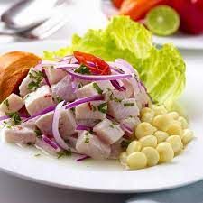

Ceviche

Freshly caught raw white fish with lime juice and sliced onions
Ingredients
- 15 medium shrimp
- 3 limes
- 2 lemons
- 1 red onion
- 1 cup of cilantro
- 1 Jalapeno
- Salt and pepper
- (OPTIONAL) Avocado
Steps
- Boil water in pot, fill bowl of ice water: Bring a pot of water to a boil. Meanwhile, fill up a medium bowl with ice water, set aside.
- Cook shrimp: Add shrimp to boiling water and let cook just until pink and opaque, about 1 minute.
- Drain, chill and chop shrimp: Drain shrimp in a colander then transfer to ice water to cool for a few minutes. Drain well then chop shrimp into small pieces (about 1/2-inch).
- Toss shrimp with fresh ingredients: In a medium bowl (you can use the same bowl) combine shrimp, lime juice, lemon juice, tomatoes, onion, cilantro, jalapeno pepper and season with salt and pepper to taste.
- Marinate: Transfer to refrigerator and let rest 1 hour.
- Add last few ingredients: Toss in cucumber and avocado and serve. It’s delicious with tortilla chips or over tostada shells.
Index